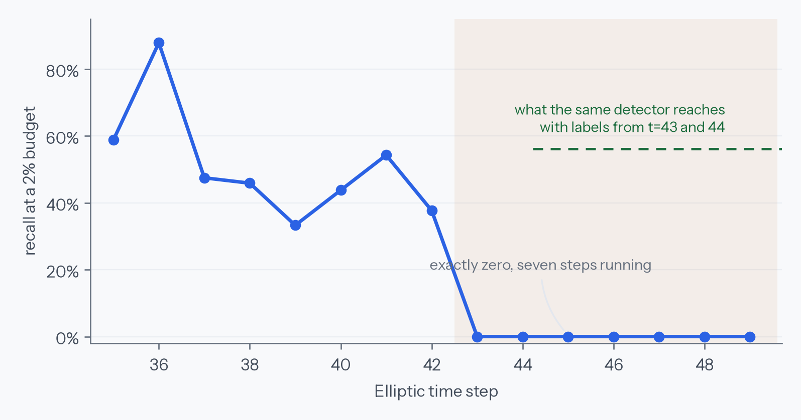
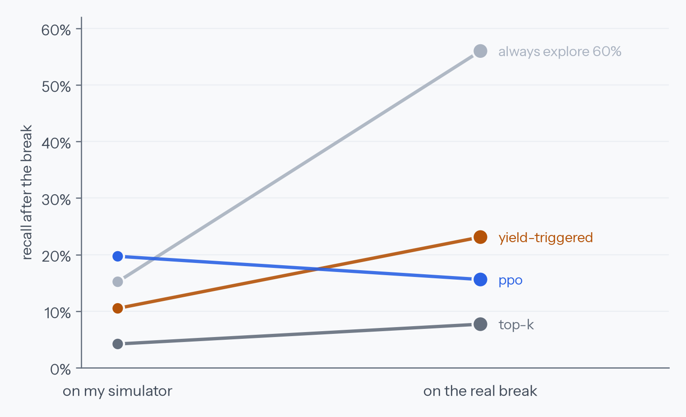
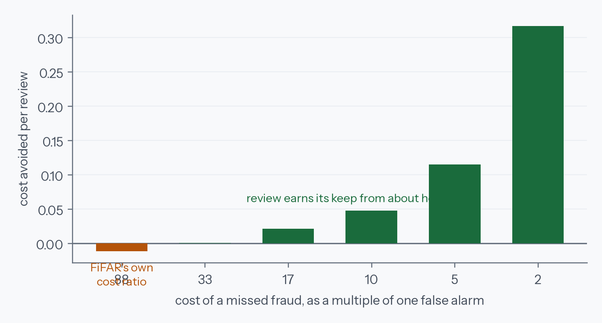

Research Notes
The simulator was the experiment
I built an RL environment for fraud investigation and trained a policy that beat every baseline I had, including a rule I wrote in ten minutes. Then I ran it on real data, where a one-line heuristic beat it by three and a half times. The agent was never the thing being tested.
Abstract
A fraud detector frozen before a regime break does not degrade, it returns exactly zero for seven consecutive steps while the fraud is still findable. That makes budgeted investigation a sequential decision problem rather than a classification one, because investigating a case is the only way to learn its label. Trained on a procedural drift simulator for 1,600 episodes across six seeds, a small PPO policy beats the industry-default top-k by +0.076 [+0.056, +0.091] and clears a hand-written adaptive rule by +0.073. Evaluated zero-shot on the real break it is ahead by 0.006, on four of six seeds, and its post-break recall ranges from 0.063 to 0.440. A policy that always spends 60% of its budget exploring still holds the record on real data. The second environment, built on 30,622 real alerts with 50 analysts' recorded decisions, produces a cleaner result by refusing to cooperate: at the cost ratio that dataset itself uses, routing an alert to a human raises expected cost by 11.6%.
I wanted an RL project that was not another CartPole, so I built an environment for a problem I actually understand: you have a fraud detector, a limited number of investigations, and the only way to learn whether a case was fraud is to spend one of those investigations on it. Then the fraud population moves. I trained a policy, it beat every baseline I had, and I was ready to write that up. Running it on real data instead took about a minute and turned the whole thing around.
The short version: the agent was never the interesting part. My simulator was, and holding out real data is the only reason I found out.
Everything numeric here comes from code in one repository, run on a laptop. Two datasets: the Elliptic Bitcoin transaction graph, and Feedzai's FiFAR alert-review dataset. The drift environment is mine, which is exactly the thing this note ends up being about. I make no claim that this is the best achievable policy: the agent is a small PPO trained for 1,600 episodes per seed, and a stronger method may well transfer where this one does not.
Seven steps at zero
Start with the measurement that made me want to build this at all. Take the Elliptic graph, 203,769 Bitcoin transactions across 49 time steps, and fit a gradient boosting detector on steps 1 to 34. Then freeze it and watch what it finds, at a budget of 2% of each step's transactions.

It does not decay. It works, and then it returns exactly zero for seven consecutive steps. Not "degraded", not "drifted": zero illicit transactions found, repeatedly, while illicit transactions were still there to find.
And the information needed to recover is sitting right there. Refit that same model with labels from just the first two post-break steps and it reaches 56.2% recall on the rest, against 1.7% frozen, at a 10% budget. So the fraud is findable. You just have to look somewhere the broken detector is telling you not to.
Why this is not a classification problem
Here is the rule that makes this a decision problem. Investigating a case reveals its label. Nothing else does.
That sounds obvious and it has a nasty consequence: your detector can only ever be retrained on cases somebody chose to investigate. A policy that always spends its budget on the highest-scoring cases will keep scoring the same kind of case highly, keep being right about them, and have no way of noticing that the population moved. It does not get a warning. It gets a zero.
This is the selective-labels setting from the fairness literature, written as a sequential problem instead of a static one.1 It is also an instance of what the RL literature calls a Monitored MDP, where the reward exists whether or not you observe it and observing it competes for the same budget as exploiting it. Every published Monitored MDP experiment I could find is a gridworld.
The opponent that matters
The easiest way to make an RL result look good is to pick a weak baseline. So before training anything I built the two that actually matter.
Top-k is what production systems run: score everything, investigate the highest scores, spend the budget evenly over time. It is not a strawman. Before the break it achieves 95.3% recall in my environment. Any policy that cannot beat it is not worth deploying.
Yield-triggered is the real bar, and I want to be honest that it took ten minutes to write. It watches its own hit rate, and when yield collapses relative to what it had been getting, it switches budget into exploring cases the detector ranks low until yield recovers. That is what a competent engineer does without any machine learning, and it is the thing a learned policy has to justify itself against.
I also report an oracle ceiling everywhere, because recall under a budget is meaningless without knowing what was achievable. A perfect ranker with the same budget gets 98.8%. Every number below should be read against that.
Building a simulator that lied to me
Elliptic has exactly one regime break. One break is one trajectory, and a policy fitted to one trajectory has memorised it, so I could not train on it. I wrote a procedural drift simulator instead: fraud is a mixture of modes in feature space, and at a randomly placed break some modes stop emitting and new ones start. Train on random breaks, evaluate on the real one.
The first version was useless and it took a while to see why. In it, top-k recovered on its own to 27.7% post-break recall, nothing like Elliptic's seven zeros. The reason is that my new fraud modes landed somewhere the old detector still scored middling, so top-k stumbled into a few of them every round, fed them to the refit, and quietly healed itself. Exploration had nothing left to contribute, which made the environment a poor model of the thing I built it for.
The fix was to make the break adversarial: generate candidate fraud modes, score them with a detector trained on pre-break traffic, and keep the ones it scores lowest. That reproduces the real collapse, and it is also the more honest story, because an adversary who adapts moves to where the current model is not looking.
Note what just happened, because it is the pattern for the whole project. I chose a property of the simulator in order to create the phenomenon I wanted to study. That is legitimate, and it is also exactly how you end up measuring your own assumptions.
The first run said it did not work
I trained a small PPO for 320 episodes and evaluated on held-out drift seeds. It got 0.596 recall against top-k's 0.570 and yield-triggered's 0.594, with a standard deviation of 0.079. In other words, it separated from nothing.
I wrote that up as a negative result, pushed it, and then noticed the obvious objection to my own work: 320 episodes is not a training run. Any reviewer kills that claim in one line. So the finding was not "RL does not help here", it was "I did not train it".
The second run said it did
1,600 episodes per seed, six seeds. On the same held-out episodes, with interquartile means and paired bootstrap intervals:
| policy | overall recall | after the break | paired vs top-k |
|---|---|---|---|
| ppo | 0.655 [0.635, 0.670] | 0.197 | +0.076 [+0.056, +0.091] |
| top-k | 0.579 | 0.042 | reference |
| yield-triggered | 0.582 | 0.105 | +0.004 |
| always explore 60% | 0.455 | 0.152 | -0.124 |
| oracle ceiling | 0.988 | 0.996 |
Paired against the hand-written rule it comes out at +0.073 [+0.053, +0.088], so it clears it, which it never did at 320 episodes. Post-break it finds 4.7 times what top-k finds. It had learned the behaviour I designed the environment to reward: keep nearly all of top-k's pre-break performance, and spend on exploration once yield collapses.
At this point I had a result. A learned policy beating both the industry default and a sensible hand-written rule, with intervals, on six seeds. This is the version of the story I would have published if I had stopped here.
Then I ran it on the real break

On my simulator, PPO has the best post-break recall of anything I tested. On the real break it is third, and the crude rule that always spends 60% of its budget on exploration beats it by 3.6 times.
Overall on Elliptic, PPO gets 0.737 against top-k's 0.730. That is +0.006, on four of six seeds. After being worth +0.076 in distribution. And its post-break recall across training seeds ranges from 0.063 to 0.440, a seven-fold spread, so on the real break its behaviour is close to a lottery.
The honest statement is narrower than either "RL works here" or "RL does not". It is: the policy reliably beats every baseline on the simulator it trained on, and that advantage does not survive contact with the real thing. More training bought in-distribution skill, not transfer.
Which means my simulator does not present what the real collapse presents. I do not fully know what the difference is, and that is the most interesting open question the project produced. The drift I generate is a mode substitution in feature space; whatever happens at Elliptic's step 43 evidently offers a different signal, or none that my observation vector exposes.
The other half: when not to use a human at all
The second environment was supposed to be the easy one, and it produced the cleanest result in the project by refusing to cooperate.
Feedzai's FiFAR records, for 30,622 real fraud alerts, what each of 50 analysts would have decided. Routing a case to a human is an exact table lookup rather than a model of a human, which is unusual and valuable. The analysts are also fallible in measured, uneven ways: false-negative rates from 0.015 to 0.312, false-positive rates from 0.015 to 0.759.
I opened the shipped scenarios expecting a sequential capacity problem and found neither sequence nor scarcity. Each test scenario is a single batch whose review capacity is 90.9% of its alerts. The training scenarios run at 100%. There is no horizon to ration across and the constraint barely binds, which is why the dataset's own baseline solves each batch to optimality with constraint programming and does well.
Then the cost ratio. FiFAR's realistic setting prices a missed fraud at roughly 88 times a false alarm. Under that ratio, the cost-optimal automated policy on these alerts is to block every one of them, which leaves zero missed fraud for a reviewer to catch. Review can then only rescue false positives, and it is not good enough at it:
lose = P(fraud) x analyst_miss_rate = 0.121 x 0.157 = 0.0190
gain = P(legit) x analyst_correct x cost = 0.879 x 0.689 x 0.0114 = 0.0069
net = -0.0121
measured in the environment = -0.0118A 15.7% analyst miss rate against a 12.1% fraud base rate costs more than the false alarms those analysts correctly clear. At a 10% review budget this raises total cost by 11.6%. So the useful question is not which routing policy wins, it is when review is worth doing at all.

This also explains a published oddity I had read past twice. On FiFAR's own evaluation in that cost regime, the dataset's method scores 0.79 and random assignment scores 0.80. Not because the method is bad, but because the realistic cell of that benchmark is close to degenerate for anything involving a human. No amount of reinforcement learning wins it, and I am glad I found that out by opening the data rather than after training something.
What I would take from this
Five results in this project were wrong before they were right. A simulator whose break was too gentle. A baseline that divided budget by batch count rather than batch size. A metric that ranked policies by how fast they burned budget, where the saving ranking turned out to be exactly the spend ranking. A decision threshold set at 0.5 on alerts that were already everything above 0.051, which manufactured a "routing matters ten times more than pacing" finding that evaporated when I fixed it. And a negative result about RL that was really a statement about my patience.
Every one of them was caught the same way: by comparing a number against something outside the thing that produced it. The simulator against real data. The policy against a rule I could write by hand. The arithmetic against the measurement. None of them were caught by the tests, which all passed throughout.
The specific lesson I did not expect is about simulators. I built one to make a phenomenon studyable, which is standard practice, and then trained a policy that got very good at it. The policy's in-distribution dominance was real, reproducible across six seeds, and almost entirely uninformative about the question I cared about. A held-out real trajectory, which is one episode and carries no confidence interval at all, was worth more than 9,600 synthetic ones.
Bottom line
- A frozen fraud detector does not degrade, it stops. Exactly zero for seven consecutive steps on real data, with 56% recoverable from two steps of labels.
- In-distribution wins are cheap. The learned policy beat every baseline on my simulator by a clear, six-seed, interval-backed margin, and that predicted almost nothing about the real break.
- Hold out something you did not build. One real trajectory told me more than 9,600 synthetic episodes, and it is the only reason I am not publishing the wrong conclusion.
- Train properly before you believe a negative result. My first "RL does not help" was a statement about 320 episodes, not about RL.
- Sometimes the answer is not to use the human. At an 88:1 cost ratio with a 15.7% analyst miss rate, routing a fraud alert to a person raises expected cost. Check the crossover before building a triage policy.
- The crude baseline still holds the record. Best post-break recall on the real data belongs to a policy that always spends 60% of its budget looking where the model says not to.
Sources
- Code, environments and every number above: JayeshSuryavanshi/caseload. Figures are generated from the committed result files, not typed by hand.
- Selective labels: Lakkaraju, Kleinberg, Leskovec, Ludwig, Mullainathan, KDD 2017. Monitored MDPs: Parisi et al., AAMAS 2024.
- FiFAR: Feedzai, A Fraud Detection Dataset for Learning to Defer, Nature Scientific Data, April 2025. CC BY.
- Elliptic Data Set, via Kaggle. Only 22.9% of its transactions carry a label, and the unlabelled majority is left in, because investigating one costs budget and reveals nothing.
- Evaluation follows Agarwal et al., NeurIPS 2021 for interquartile means and stratified bootstraps, and Patterson et al., JMLR 2024 on why ten runs is not enough.
- Companion piece: The wrong opponent, on picking benchmark opponents that flatter you.